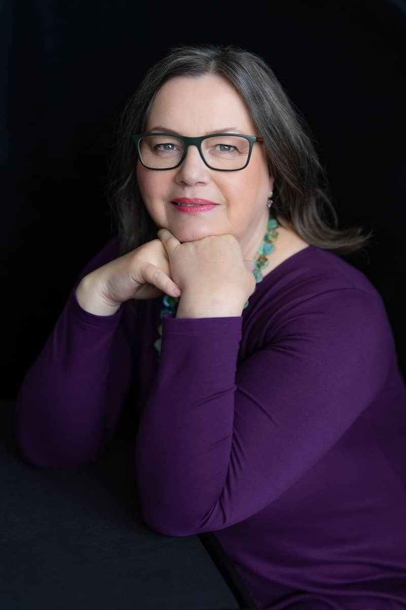

O mne

Od roku 2007 som zapísaná v Zozname psychoterapeutov Slovenskej psychoterapeutickej spoločnosti. Od roku 2008 som držiteľkou licencie Slovenskej komory psychológov na výkon psychoterapie ako certifikovanej pracovnej činnosti a psychologického poradenstva. Od roku 2015 som medzinárodne uznanou diplomovanou psychoterapeutkou a facilitátorkou procesorientovanej práce. Po ukončení inžinierskeho štúdia fytotechnického odboru na Agronomickej fakulte, vtedy Vysokej školy poľnohospodárskej v Nitre (1986-1991), som študovala v Bratislave na Katedre psychologických vied Filozofickej fakulty Univerzity Komenského (1991-1996).
Absolvované výcviky
- procesorientovanej psychológie (od 1994):
- V roku 1998 som ukončila dlhodobý česko – slovenský psychoterapeutický výcvik v procesorientovanej psychoterapii (na Slovensku ho viedol medzinárodný tím diplomovaných POP terapeutov: Ivan Verný, Arlène Audergon, Jean – Claude Audergon a Lane Arye).
- Následne som skúškami zakončila fázu I. medzinárodného štúdia procesovej práce.
- V medzinárodnom štúdiu akreditovanom Medzinárodnou asociáciou procesorientovanej psychológie IAPOP som pokračovala pod záštitou RS POP UK Londýn (fáza II.) a na Slovensku v inštitúte POPI-Slovensko a štúdium som zavŕšila záverečnými skúškami v roku 2015.
- Obhájila som záverečnú prácu s názvom „The Birth of the Butterfly" zaoberajúcu sa ženstvom, vnútornou autoritou, silou a citlivosťou, hanbou, útlakom a transformáciou.
- Učila som sa aj od Marianne Verný, Uruly Jean, Reiniho Heusera, Leslie Heiser, Barbary Zuest, Thomasa Dienera, Alexandry Vassiliou, Leny Aslanidou, Pat Black a Stáni Študentovej, Lukasa Hohlera, Jan Dworkin, Clare Hill, Conora McKennu, Evelyn Figueroa a Charleen Agostini, Kate Jobe a samozrejme od Arnolda a Amy Mindellovcov (1994, 2005, 2017).
- V roku 2017 a 2018 som absolvovala tréningy trénerov procesovej práce (POP) pod vedením Jan Dworkin.
- Neustále svoju prácu supervidujem so supervízorkami Clare Hill, Marianne Sinner (od 2017) a s Jan Dworkin (od 2023).
- Od roku 1998 som sa vzdelávala v systemickej terapii podľa Berta Hellingera, ktorého prácu priniesol do môjho zorného poľa Ivan Verný. V roku 2009 som ukončila nadstavbový česko – slovenský výcvik „Procesová práca v systemických štruktúrach" pod vedením Ivana Verného, Zlaty Šramovej a Pavla Konečného.
- V roku 2024 som absolvovala akreditovaný vzdelávací program ďalšieho vzdelávania Supervízia v pomáhajúcich profesiách (Vlado Hambálek).
Iné vzdelávanie
- neurolingvistického programovania (Hana Stanek – Vesecká)
- ericksonovskej nedirektívnej hypnózy (dr. Jiří Zíka)
- somatic experiencing
- hlbinná imaginácia (Eligio Stephen Gallegos)
- senzoricko-motorická arteterapia (Cornelia Elbrecht)
Pracovala som
- v Psychiatrickej nemocnici Philipa Pinela v Pezinku na mužskom AT oddelení a na ženskom oddelení,
- s deťmi a mládežou, s rodičmi aj učiteľmi v Centre výchovnej a psychologickej prevencie (CVPP) pri Pedagogicko – psychologickej poradni (PPP) v Trnave,
- ako vedúca CVPP pri PPP v Hlohovci, kde som sa tiež podieľala na projekte Univerzum (2005-2007) spolufinancovaného ESF,
- ako psychologička na základnej škole v Piešťanoch,
- ako členka direktória POPI-Slovensko (2002-2020),
- od 2008 mám súkromnú prax v Piešťanoch,
- od 2012 som bola asistentkou výcviku v POP,
- od 2016 som trénerkou psychoterapeutického a facilitačného vzdelávania v procesovej práci (POP) akreditovaného na Slovensku aj v IAPOP,
- od 2016 som supervízorkou POP.
Som spoluautorkou
- kapitoly o procesorientovanej psychoterapii v učebnice Současné psychoterapie (Vymětal, Roubal a kol., 2011),
- kapitoly Psychologické poradenstvo v práci s LGBTI+ menšinami v učebnici Kapitoly z poradenskej psychológie (Smitková a kol., 2014),
- kapitoly Procesorientovaná psychológia v psychologickom poradenstve a psychoterapii v učebnici Poradenská psychológia a jej využitie v praxi (Smitková a kol., 2024).
Okrajovo sa venujem aj prekladateľskej práci, najmä pre potreby inštitútu POPI-Slovensko. Od roku 2017 som členkou IAPOP. Od roku 2018 som členkou garantského tímu POPI-Slovensko.
V roku 1997 sa začala pre mňa významná história ženských seminárov. Dvadsať rokov som organizovala a zúčastňovala sa na tzv. babincoch pod vedením jednej z mojich významných učiteliek Marianne Verný. Babince som aj viedla a zameriavala sa na skúmanie ženstva a ženských resp. rodových tém a vytváranie priestoru na vzájomnú podporu pri hľadaní a nadobúdaní vnútornej autority a sily, transformácie, zraniteľnosti a tvorivosti, aj prostredníctvom výtvarných techník.
Od roku 2003 som spoluviedla rôzne POP semináre a workshopy: úvody do procesovej práce, práca so sebakritikou, kritikou, o smrti, matkách a dcérach, tele, telesných symptómoch a snoch atď. V roku 2017 som na Česko-slovenskej psychoterapeutickej konferencii v Piešťanoch aj na konferencii Vnútorná krajina v Bratislave prezentovala procesovú prácu na workshope o sebakritike spolu s Brigit Trimajovou.
V minulosti som sa venovala aj rôznym malým projektom napr. som spolupracovala s časopisom Mama a ja, so Štúdiom pantomímy pri Divadle a.ha, s Materským centrom Úsmev v Piešťanoch.
V súčasnosti sa venujem prepájaniu supervízie procesovej práce s výtvarnou tvorbou na letných Ateliéroch. Približne od svojich 45-tich rokov sa venujem výtvarnej tvorbe. Vydala som tiež svoju autorskú zbierku poézie Živá (2021).